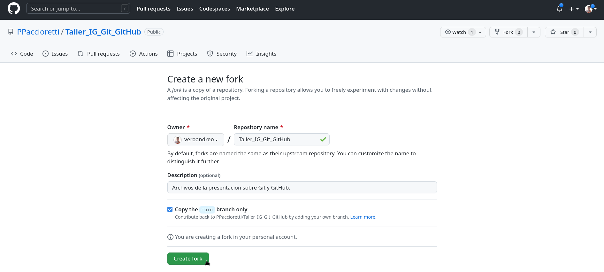
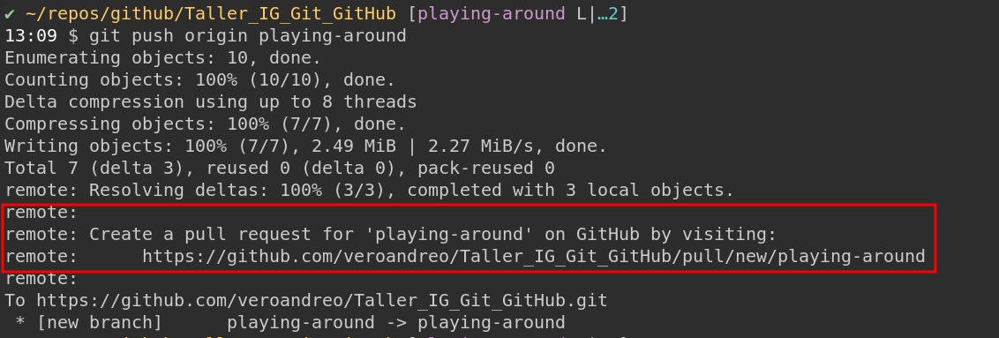

graph TD A[Working] -->|add| B(Staging) B --> |commit| C(Repository)
Pablo Paccioretti
Verónica Andreo
git instalado en la PCPor defecto git está instalado en la mayoría de las PCs que tienen Mac o Linux. En Windows se puede instalar desde aquí
Quarto puede usarse con: VS Code, RStudio, Jupyter, Neovim, otros editores de texto
gitgit workflow local
git?git Workflow localgitPara utilizar git no es necesario internet. Es posible trabajar sólo localmente para llevar un control de versiones.
Cuándo se debería usar git?
Principalmente para trabajar/editar archivos de texto plano, por ejemplo: .py, .sh, .md, .qmd, .r, etc. No se recomienda para imágenes, películas, música o archivos como pdf, docx, etc.
Cómo deberían ser los mensajes de cada commit
Mediante una oración corta e informativa (\(\le 72\) caracteres), se debería describir y resumir los cambios que se realizaron.
Cuidado!
Esto también elimina el archivo del repositorio.
Renombrar/mover archivos
Algunos tips para trabajar con ramas
Se puede cambiar entre ramas y realizar commits en cada una de ellas.
Cada rama está separada y es independiente de las otras ramas, pero contiene todo lo que tenía la rama principal al momento del branching.
Antes de cambiar entre ramas, el directorio de trabajo debería estar sin conflictos ni cambios no registrados (commiteados).
Supongamos que agregamos algo nuevo en una feature_branch y lo queremos incorporar a la rama principal main. Cambiamos a main y desde allí traemos los cambios realizados en feature_branch:
git identificará los conflictos pero no los solucionará; queda a criterio del usuario.Alternativas:
git merge --abortPodemos ver los cambios que se estuvieron realizando y volver a versiones anteriores que ya fueron registradas (_commiteadas_)
gitHacer modificaciones locales y subirlas al repo remoto (pushear)
Bajar cambios remotos/actualizar repo local
Fork-ear el repo remoto al que queremos contribuir
Fork-ear el repo remoto al que queremos contribuir
Fork (copia del repo original) en nuestro GitHub (remoto)
Clonar el fork - online
Clonar el fork - bajarlo a nuestra PC
Decirle quien es el repo remoto madre
Y cómo contribuimos modificaciones al repo de alguien más?
En commandos…
Click en el link… y…
Creamos el pull request
Una vez creado el PR, se pueden seguir haciendo commits desde la feature branch al PR
Merged pull request
origin https://github.com/veroandreo/Taller_IG_Git_GitHub.git (fetch)
origin https://github.com/veroandreo/Taller_IG_Git_GitHub.git (push)
upstream https://github.com/PPaccioretti/Taller_IG_Git_GitHub.git (fetch)
upstream https://github.com/PPaccioretti/Taller_IG_Git_GitHub.git (push)remote: Enumerating objects: 11, done.
remote: Counting objects: 100% (11/11), done.
remote: Compressing objects: 100% (5/5), done.
remote: Total 5 (delta 3), reused 0 (delta 0), pack-reused 0
Unpacking objects: 100% (5/5), 1.41 KiB | 62.00 KiB/s, done.
From https://github.com/PPaccioretti/Taller_IG_Git_GitHub
29e253f..23b8f56 main -> origin/main
Updating 29e253f..23b8f56
Fast-forward
.github/workflows/publish.yml | 25 +++++++++++++++++++++++++
Presentacion.qmd | 41 -----------------------------------------
_quarto.yml | 4 ++++
3 files changed, 29 insertions(+), 41 deletions(-)
create mode 100644 .github/workflows/publish.ymlremote: Enumerating objects: 10, done.
remote: Counting objects: 100% (10/10), done.
remote: Compressing objects: 100% (2/2), done.
remote: Total 6 (delta 3), reused 5 (delta 3), pack-reused 0
Unpacking objects: 100% (6/6), 1.18 KiB | 37.00 KiB/s, done.
From https://github.com/PPaccioretti/Taller_IG_Git_GitHub
93c8128..845dc10 main -> origin/main
error: Your local changes to the following files would be overwritten by merge:
.gitignore
Presentacion.qmd
Please commit your changes or stash them before you merge.
Aborting
Updating 93c8128..845dc10